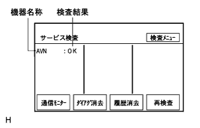
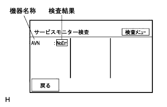
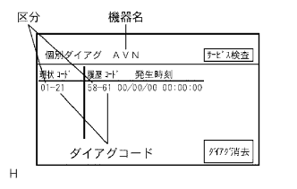
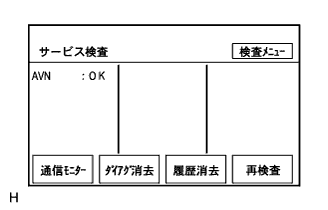
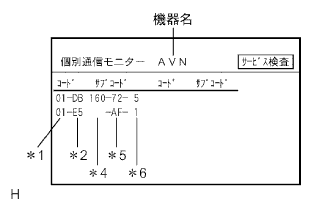
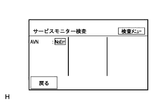

Diagnostic activation reference)
reference)
DVD Navigation System Service Inspection (AVC-LAN connection confirmation and diameter code check) |
| Step 1 | Diagnostic activation |
Diagnostic activationreference)
| Step 2 | Service inspection (AVC-LAN connection confirmation) |
|  |
Service inspection
| display | meaning |
|---|---|
| Device name | Display the name, including the retrofit parts (if the name is unknown, display the physical address) |
| Test result | Display test results |
Confirm that all connected devices below are displayed.
| Device name | Part name |
|---|---|
| AVN | Navigation receiver ASSY |
Refer to the following table and proceed to the specified flying destination.
| Display device name | Destination |
|---|---|
| Only AVN is displayed (Optional non -installed car) | A |
| All connected devices are displayed (car with options with retailers) | A |
| Not all devices other than "AVN" are displayed (AVN displays "check") (car with options with retailers) | B |
| All devices other than “AVN” are displayed “unrelated” (AVN is displayed “check”) (car with options with retailers) | B |
|
| ||||
| A | |
| Step 3 | Service inspection (diagnose code confirmation) |
Service inspection
Read the test results.
Refer to the following table and proceed to the specified flying destination.
| Test result | meaning | Destination |
|---|---|---|
| OK | There is no diag code input (excluding communication diages for each device by AVC-LAN) | A |
| exchange | There is an input of a diag code that is judged to be replaced | B |
| check | There is an input of a diagram code that is judged to have a diagnosis | B |
| Old ver | There is some diag code input with the old diag specification device | B |
| Unconnected | It has been registered in the system once in the past, but has no response when the diager starts. | C |
| Without answers | There is a response when the diager is started, but there is no response to the diag information | C |
| It is connected to AVC-LAN, but is not displayed in both equipment names and inspection results | There is no history registered in the system, and there is no response when the diagram starts | C |
|
| ||||
|
| ||||
| A | |
| Step 4 | Communication monitor |
 |
Communication monitor
Select "Communication monitor" and migrate to the service monitor inspection screen.
|  |
Read the test results.
| display | meaning |
|---|---|
| Device name | Display the name, including the retrofit parts (if the name is unknown, display the physical address) |
| Test result | Display test results |
| Inspection menu | Return to the "inspection menu" screen |
| return | Return to the service inspection screen |
Refer to the following table and proceed to the specified flying destination.
| Test result | meaning | Destination |
|---|---|---|
| No err | There is no diagcode input (communication diager of each device by AVC-LAN) | A |
| check | There is an input of a diagram code (communication diagram) that is judged to be diagnosed | B |
| Unconnected | It has been registered in the system once in the past, but has no response when the diager starts. | C |
| Without answers | There is a response when the diager is started, but there is no response to the diag information | C |
| It is connected to AVC-LAN, but is not displayed in both equipment names and inspection results | There is no history registered in the system, and there is no response when the diagram starts | C |
reference)
|
| ||||
|
| ||||
| A | ||
| ||
| Step 5 | Individual diagram |
Individual diagram
When the test result is "exchange", "check", and "old ver", this display is selected and migrated to the individual diag screen.
|  |
Check and record the contents of the output diagnostic code.
| display | meaning |
|---|---|
| Equipment name | The target equipment name |
| Classification | The target logical address number |
| Diag code | Diag code |
| current situation | Display the input diag code in the system inspection (up to 6 items) |
| history | Diag memory collection results, usually diager notifications are displayed (up to 6 items) |
| Diag eraser | Clear the target device and clear the display (3 seconds and long press) |
| Service inspection | Return to the "service inspection" screen |
| Step 6 | To the diag code list |
Inspection and repair according to the instructions in the diag code list.(The point isreference)
| Step 7 | Diagnostic activation |
Diagnostic activationreference)
| Step 8 | Diag code erasure |
|
Service inspection
| display | meaning |
|---|---|
| Diag eraser | Clears the diagram memory and service test results, and also clear the screen display of the test result (3 seconds and long press) |
| Out of history | Master device registration history ・ Clear all diagram memory of all devices (3 seconds and long press) |
| Re -examination | Perform a service inspection again |
Diag eraser
Select "Diag Eraser" and "Erase History" (press and hold for more than 3 seconds) to delete the diag and erase the history.
| Step 9 | Diagnostic activation |
Diagnostic activationreference)
| Step 10 | Re -examination |
|  |
Service inspection
Inspect the "OK" display.
|
| ||||
| OK | ||
| ||
| Step 11 | Individual communication monitor |
Individual diagram
When the test result is "check" or "old ver", this display is selected and migrated to the individual communication monitor screen.
|  |
Check and record the contents of the output diagnostic code.
| display | meaning |
|---|---|
| Equipment name | The target equipment name |
| Category (*1) | The target logical address |
| Diag code (*2) | Diag code |
| Auxiliary code (related equipment address number) (*4) | Physical address number memorized by the diag code and set (if there is no address information, blank display) |
| Connection confirmation number (*5) | Connection confirmation number memorized by the diag code and set |
| Number of occurrence (*6) | Number of occurrence of the same diag code that is remembered in the set and set |
| Service inspection | Return to the "Service Monitor Test" screen |
| Auxiliary code (Physical address) | Part name |
|---|---|
| 140 | Navigation receiver ASSY |
| Step 12 | To the diag code list |
Inspection and repair according to the instructions in the diag code list.(The point isreference)
| Step 13 | Diagnostic activation |
Diagnostic activationreference)
| Procedure 14 | Diag code erasure |
|
Service inspection
| display | meaning |
|---|---|
| Diag eraser | Clears the diagram memory and service test results, and also clear the screen display of the test result (3 seconds and long press) |
| Out of history | Master device registration history ・ Clear all diagram memory of all devices (3 seconds and long press) |
| Re -examination | Perform a service inspection again |
Diag eraser
Select "Diag Eraser" and "Erase History" (press and hold for more than 3 seconds) to delete the diag and erase the history.
| Step 15 | Diagnostic activation |
Diagnostic activationreference)
| Step 16 | Re -examination |
Service inspection
Select "Communication monitor" and migrate to the service monitor inspection screen.
|  |
Inspect the “NOERR” display.
|
| ||||
| OK | ||
| ||